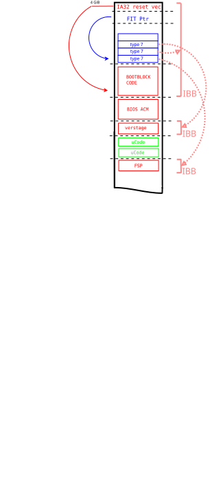

Intel TXT Initial Boot Block
The Initial Boot Block (IBB) consists out of one or more files in the CBFS.
Constraints
The IBB must follow the following constrains:
One IBB must contain the reset vector as well as the [FIT table].
The IBB should be as small as possible.
The IBBs must not overlap each other.
The IBB might overlap with microcode.
The IBB must not overlap the BIOS ACM.
The IBB size must be a multiple of 16.
Either one of the following:
The IBB must be able to train the main system memory and clear all secrets.
If the IBB cannot train the main system memory it must verify the code that can train the main system memory and is able to clear all secrets.
Identification
To add the IBBs to the FIT, all CBFS files are added using the cbfstool
with the --ibb flag set.
The flags sets the CBFS file attribute tag to LE ' IBB'.
The make system in turn adds all those files to the FIT as type 7.
Intel TXT measurements
Each IBB is measured and extended into PCR0 by Intel TXT, before the CPU reset vector is executed. The IBBs are measured in the order they are listed in the FIT.
FIT schematic
